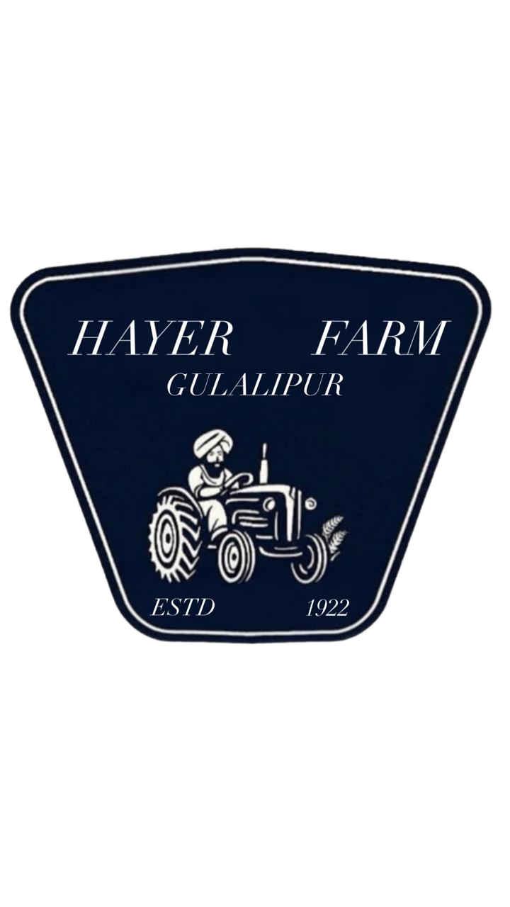
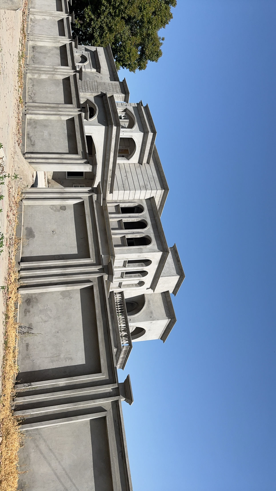
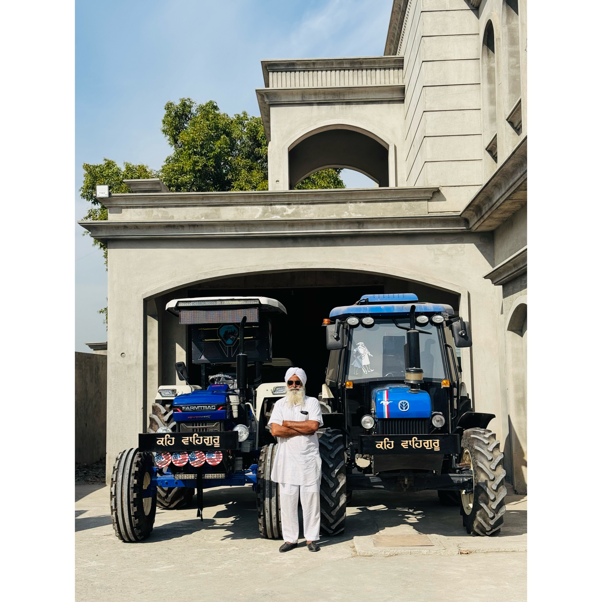

Wheat
Premium HD-2967 & PBW varieties, harvested every Rabi season.


Hayer FarmsGulalipur · Tarn Taran · Punjab
Family-owned farmland stretching across the fertile plains of Tarn Taran — cultivating wheat, rice, and seasonal crops with care passed down through generations.
50+
Acres Farmed
3
Generations
4
Crops Grown
100%
Natural Farming
Who We Are
Hayer Farms has been a cornerstone of agriculture in Gulalipur, Tarn Taran district, Punjab for over three generations. What began as a modest patch of land has grown into a thriving farm that honors traditional Punjabi farming methods while embracing sustainable modern practices.
Nestled in the fertile heartland of Punjab — fed by the waters of the Beas — our fields produce some of the finest wheat and basmati rice in the region, alongside seasonal vegetables and mustard.
Get in Touch
Est. in Gulalipur
Tarn Taran
What We Grow
Wheat
Premium HD-2967 & PBW varieties, harvested every Rabi season.
Basmati Rice
Long-grain aromatic basmati from the Kharif season.
Mustard
Bright yellow fields in winter — pure cold-pressed sarson oil.
Seasonal Vegetables
Fresh greens, gourds, and legumes grown for local markets.
From the Fields

Our Legacy
Our grandfather broke this ground with a single plough. Today, Hayer Farms stands as a testament to Punjabi resilience, community, and an unbreakable bond with the earth. We farm not just for yield — but for the next generation.
— The Hayer Family, Gulalipur
Our Values
We minimize chemical inputs and rely on age-old crop rotation and compost techniques that keep our soil healthy for decades to come.
Rabi and Kharif cycles govern everything we do. We plant, tend, and harvest in harmony with Punjab's seasons for peak quality every year.
Hayer Farms supports local labour in Gulalipur and surrounding villages. Our harvest is our community's livelihood — and that bond is sacred.
Find Us
Address
Hayer Farms, Village Gulalipur
Tarn Taran District, Punjab
India — 143 401
Phone
Send a Message